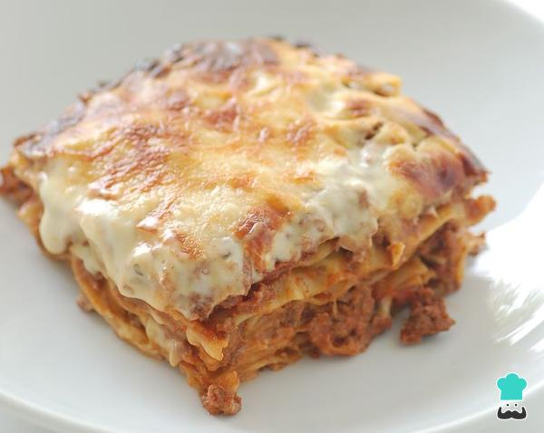

Lasagna

Lasagna
It's Delicious
In
Lasagna is a type of pasta. It is usually served in overlapping sheets interspersed with layers of ingredients
to taste, most often meat in bolognese sauce and béchamel. Its origin is Italian and the dish usually prepared
with meat is called baked lasagna.
Ingredients
- 2 sheets of bacon cut into strips (56 g)
- 1/2 big white onion, finely chopped (40 g)
- 2 red tomatoes, without skin and finely chopped (223 g)
- 2 cups mushrooms, sliced (140 g)
- 1 pound lean ground beef (500 g)
- 1 envelope of BROTH WITH SHREDDED MAGGI® RIBS (9 g)
- 1½ cups of water (375 ml)
- 1/2 box of pasta for lasagna (200 g)
- 6 tablespoons of grated mozzarella cheese (60 g)
- 4 tablespoons grated Parmesan cheese (20 g)
Steps
- Preheat the oven to 180°C/360°F, 30 minutes before preparation.
- In a frying pan over high heat, fry the bacon for 2 minutes, add the onion, tomatoes and cook for 3 minutes.
Finally, add the mushrooms, the meat, the SHREDDED MAGGI® RIBS BROTH packet, the water , cook for 10 more
minutes or until the meat is well cooked and turn off the heat.
- Place a bed of pasta at the bottom of a refractory pan, a bed of meat filling, mozzarella cheese, repeat the
same process until you finish all the ingredients and build 3 layers, finally, sprinkle the Parmesan cheese.
- Take the refractory to the oven and cook for 10 minutes or until gratin, remove the refractory from the oven and serve.